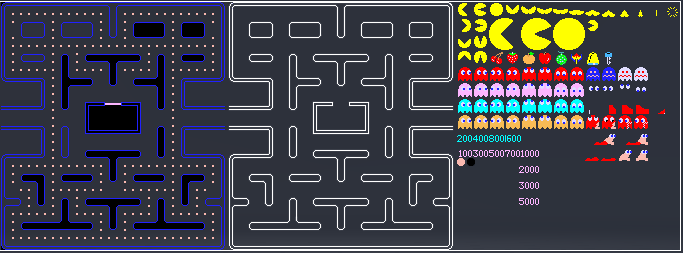

Pour ce qui est de l'affichage, on peut utiliser plusieurs méthodes et des moteurs graphiques.
Mais pour une raison de simplicité nous afficherons le résultat en texte dans la console.
On aurait pu utiliser des sprites comme si dessous.
